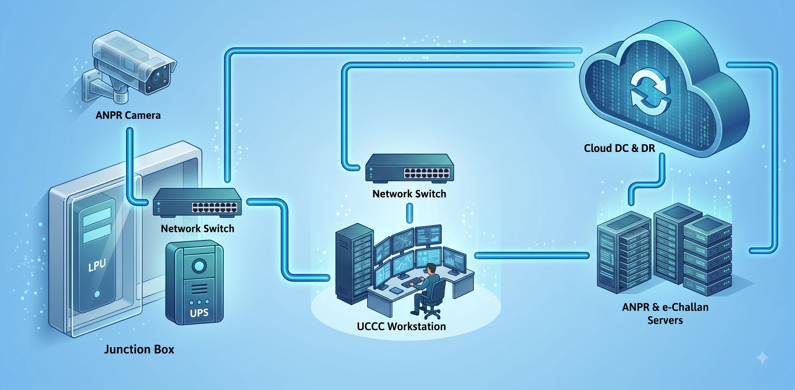

STATE TRANSPORT AUTHORITY
Government of Odisha • Intelligent Enforcement Management System
THE CRITICAL CHALLENGE
Surging arterial traffic volumes created life-threatening hazards for field officers attempting manual roadside stops while leaving the vast majority of infractions unrecorded.
Severe Roadside Interception Hazards
Physical stops forced officers into live high-speed lanes, endangering personnel and motorists.
Widespread Unaddressed Infractions
Helmet non-compliance, missing seatbelts, and distracted driving regularly passed unnoticed.
Administrative Processing Delays
Disconnected manual logs caused weeks of delay before violation notices could be issued.
ZERO BLINDSPOTS: TRANSFORMING SAFETY FROM THE CUSTOMER PERSPECTIVE
When state transport authorities manage thousands of kilometers of high-speed corridors, their primary responsibility extends beyond punitive enforcement—it is about safeguarding citizen lives while maintaining absolute legal transparency. For the State Transport Authority, Government of Odisha, traditional roadside enforcement had reached an operational breaking point. Field squads were forced into active, fast-moving traffic lanes to wave down speeding vehicles, triggering dangerous emergency braking for trailing vehicles and allowing hundreds of high-risk violations to bypass unpenalized.
"Ensuring that every commuter returns home safely requires transitioning from hazardous physical checkpoints to fully autonomous, digital highway governance."
The departmental challenge was not solely about capturing speed violations; it was about addressing a wide spectrum of road behaviors that lead directly to fatalities. Unhelmeted two-wheeler riders, triple riding, missing seatbelts, commercial wrong-way driving, and mobile phone usage behind the wheel were pervasive yet nearly impossible to document manually at scale. Manual logging created substantial paperwork delays, causing weeks to elapse before a challan was issued, diluting behavioral deterrence across the driving public.
SOS Infocity addressed this operational gap by engineering a turnkey, state-wide Intelligent Enforcement Management System (IEMS). Instead of isolated radar traps, heavy-duty U-Shape gantries and cantilever steel frameworks were precision-engineered along critical accident blackspots. Equipped with intelligent junction boxes, industrial solar battery backups, and redundant underground fiber optic conduits, the physical installations remain fully resilient against highway power outages, extreme heat, and severe coastal storms.
The intelligence layer relies on edge-AI vision sensors coupled with 3D multi-lane tracking radars that evaluate vehicle trajectory and velocity simultaneously across all lanes. These edge units eliminate vehicle occlusion and shadow interference during peak volume. In fractions of a second, deep learning models analyze license plate typography, verify helmet wear, assess cabin seatbelt compliance, and capture high-definition, tamper-proof image evidence. This evidence-grade data stream gives transport authorities and motorists complete confidence in infraction validity.
THE SOS INFOCITY ECOSYSTEM
A comprehensive modernization connecting intelligent roadside sensors directly with centralized state governance.
- AI-Powered Edge Enforcement: Automated detection of multi-lane speed limits, helmets, seatbelts, wrong-way driving, and mobile phone usage.
- Resilient Roadside Hardware: Heavy-duty U-Shape gantries, cantilevers, solar power units, and intelligent junction boxes.
- Unified Command & Control Centre (UCCC): Real-time situational dashboards, high-resolution video walls, and centralized evidence vaults.
- Frictionless National Sync: Seamless, automated integration with VAHAN, SARATHI, e-Challan, and ERSS 112 databases.
At the Unified Command & Control Centre (UCCC), incoming infraction packets are validated in real time without forcing operators to manually sift through hours of raw video. Automated API pipelines cross-check vehicle registry databases via VAHAN and SARATHI to verify owner information, registration class, and historical offenses, subsequently generating and dispatching digital e-Challans via SMS in under thirty seconds.
Supported by a dedicated 24×7 Service Level Agreement (SLA), SOS Infocity provides automated sensor health diagnostics, network monitoring, and rapid on-ground maintenance teams. This continuous operational support ensures that highway surveillance operates without interruption, protecting state revenues and prioritizing commuter life.
MEASURABLE CLIENT IMPACT
Completely eliminated dangerous manual roadside stops, delivered 99.9% uptime across all corridors, and accelerated penalty processing from weeks to seconds.
Unified Control Hub
24×7 video wall monitoring, dashboard analytics, and automated incident tracking.
Field Gantries & Sensors
Heavy-duty U-Shape & cantilever structures deployed along active arterial corridors.

AI & ANPR Analytics
Multi-lane vehicle tracking, speed detection, and automated violation recognition.
Unified Enforcement Operations
"From the Roadside to the Command Centre — Every Event. Every Vehicle. Every Decision. Connected by SOS Infocity."
Build Safer Roads with SOS Infocity
Discover how our turnkey Intelligent Enforcement Management Systems (IEMS) transform state highway networks into proactive, life-saving corridors.